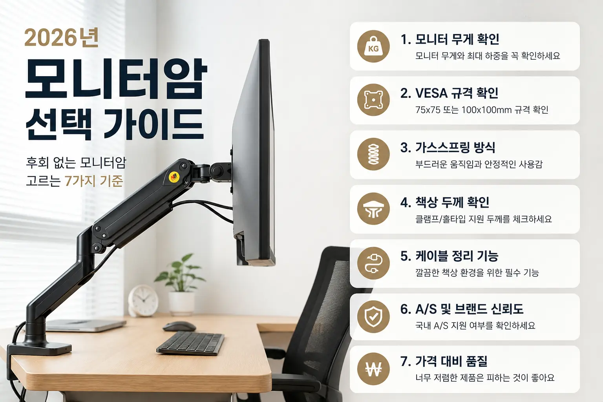

2026년 모니터암 선택 가이드
모니터암은 단순히 책상을 깔끔하게 만드는 액세서리가 아닙니다.
장시간 컴퓨터를 사용하는 사람이라면 목과 어깨의 부담을 줄이고 작업 공간을 효율적으로 활용할 수 있는 필수 아이템이기도 합니다.
하지만 막상 구매하려고 보면 가격도 천차만별이고, 광고도 너무 많아 어떤 제품을 선택해야 할지 고민되는 경우가 많습니다.
이번 글에서는 특정 브랜드를 추천하기보다 좋은 모니터암을 선택하는 기준을 중심으로 살펴보겠습니다.
1. 가장 먼저 확인해야 하는 것은 무게
생각보다 많은 사람들이 모니터 크기만 보고 구매합니다.
하지만 실제로 중요한 것은 모니터의 무게입니다.
예를 들어 27인치, 32인치라고 해도 무게는 제조사마다 크게 차이납니다.
구매 전에는 반드시 아래 항목을 확인하는 것이 좋습니다.
- 모니터 전체 무게
- 스탠드 제외 무게
- 모니터암의 최대 지원 하중
모니터암의 최대 하중보다 1~2kg 정도 여유가 있는 제품을 선택하면 안정성이 높아집니다.
2. VESA 규격 확인
대부분의 모니터는 75×75mm 또는 100×100mm VESA 규격을 사용합니다.
이 규격은 모니터 뒤편이나 제품 설명에서 확인할 수 있습니다.
VESA 규격이 맞지 않으면 장착 자체가 불가능하기 때문에 구매 전 반드시 확인해야 합니다.
3. 가스스프링 방식이 훨씬 편하다
저가형 모니터암은 고정식이나 일반 스프링 방식을 사용하는 경우가 많습니다.
반면 가스스프링 방식은 높이 조절, 좌우 이동, 앞뒤 이동이 매우 부드럽습니다.
매일 모니터 위치를 조정하거나 책상 환경을 자주 바꾸는 사람이라면 가스스프링 제품이 만족도가 훨씬 높습니다.
4. 책상 두께도 중요하다
클램프 방식 모니터암은 보통 20~80mm 정도의 책상 두께를 지원합니다.
책상이 너무 두껍거나 특수한 구조라면 설치가 어려울 수 있습니다.
구매 전 책상 두께와 설치 공간을 함께 확인하는 것이 좋습니다.
5. 케이블 정리 기능
좋은 모니터암은 케이블을 암 내부나 커버 안쪽으로 정리할 수 있습니다.
케이블 정리 기능이 있으면 책상 위가 훨씬 깔끔해지고 청소도 쉬워집니다.
작은 차이 같지만 장기간 사용할수록 만족도가 높은 부분입니다.
6. A/S도 꼭 확인
모니터암은 한 번 설치하면 몇 년씩 사용하는 제품입니다.
국내 A/S가 가능한 브랜드인지 확인하면 추후 문제가 발생했을 때 훨씬 편리합니다.
특히 가스스프링 방식은 장기간 사용 시 장력 조절이나 부품 문제를 고려해야 하므로 사후 지원 여부가 중요합니다.
7. 너무 저렴한 제품은 피하는 것이 좋다
2~3만 원대 제품도 사용할 수는 있지만 흔들림, 처짐, 마감 품질에서 차이가 발생하는 경우가 많습니다.
모니터는 고가의 장비인 만큼 지지하는 장치도 어느 정도 신뢰할 수 있는 제품을 선택하는 것이 좋습니다.
장기간 사용할 계획이라면 적당한 가격대의 검증된 제품이 만족도가 높습니다.
WorthPick Check
| 항목 | 평가 |
|---|---|
| 설치 난이도 | ★★★★☆ |
| 내구성 | ★★★★★ |
| 공간 활용 | ★★★★★ |
| 가성비 | ★★★★☆ |
| 재구매 의사 | ★★★★★ |
WorthPick 한 줄 결론
모니터암은 모니터 크기보다 모니터 무게를 먼저 확인하는 것이 가장 중요합니다.
좋은 모니터암 하나만으로도 책상 공간 활용은 물론 장시간 작업 시의 피로도까지 크게 줄일 수 있습니다.
구매 전에는 하중, VESA 규격, 설치 방식, A/S 여부를 함께 비교하여 자신에게 맞는 제품을 선택하는 것을 추천합니다.